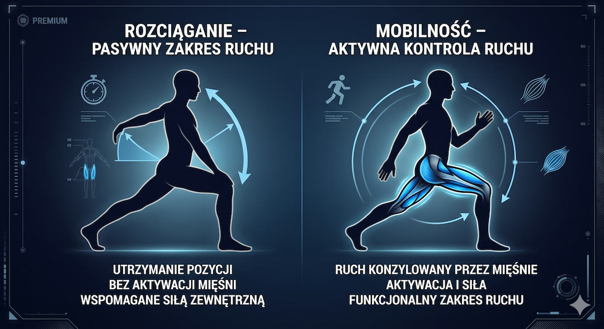
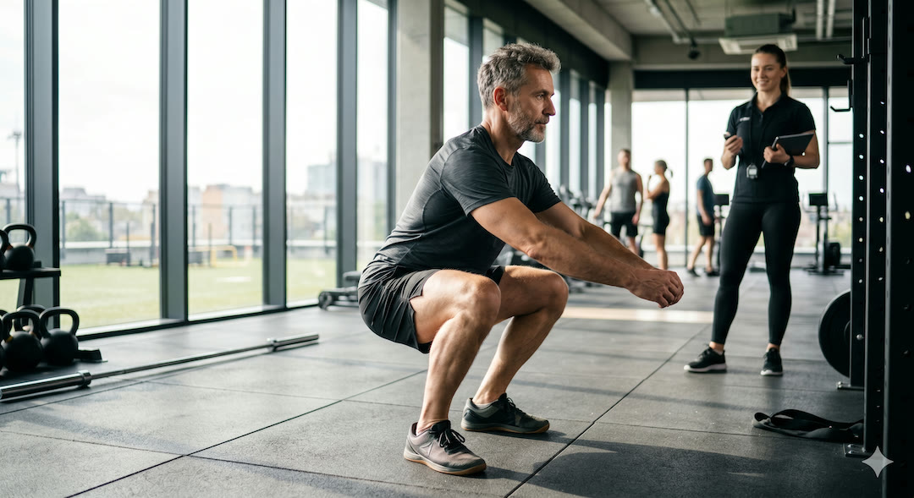
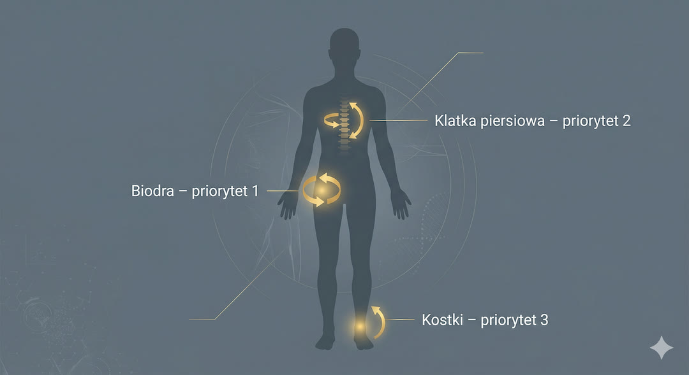
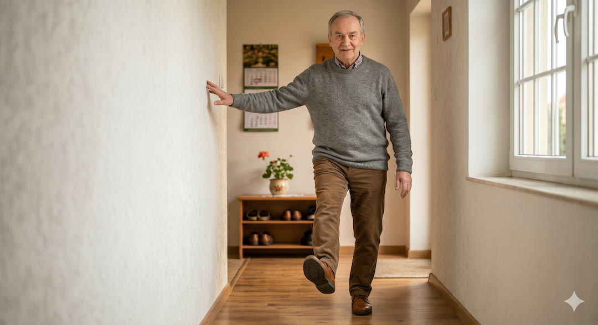
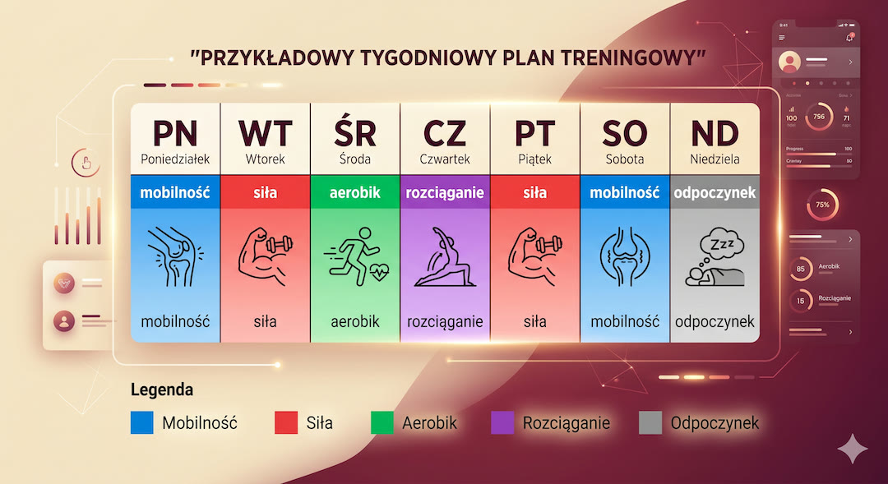
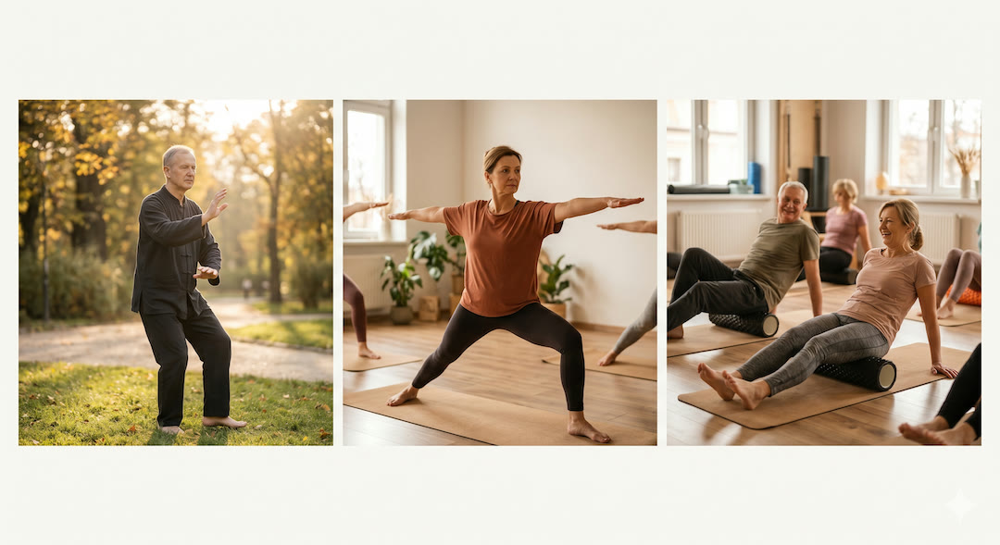
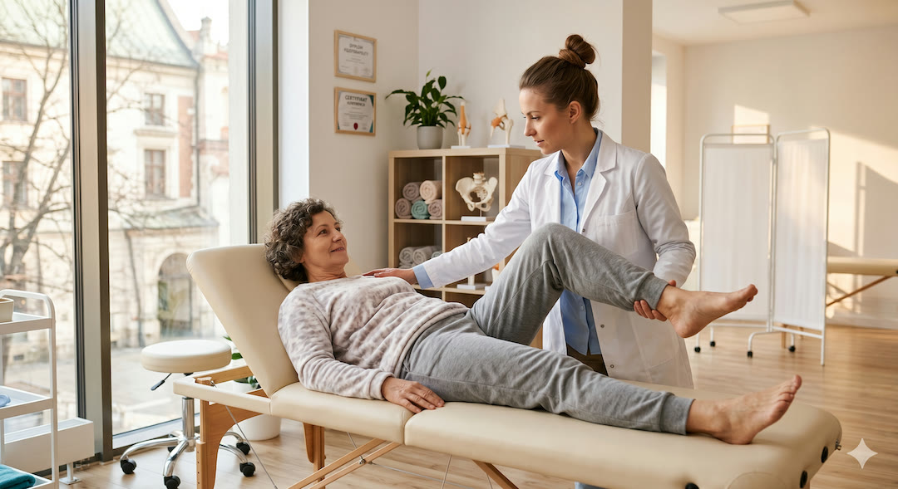

Przez lata słyszeliśmy jedno: rozciągaj się, a stawy będą zdrowe. Tymczasem nauka pokazuje wyraźnie, że sama elastyczność mięśni to za mało – i że między rozciąganiem a mobilnością jest różnica równie ważna, jak między posiadaniem kluczy do samochodu a umiejętnością prowadzenia. Rozciąganie poprawia zakres ruchu w spoczynku. Mobilność sprawia, że możesz ten zakres kontrolować i bezpiecznie używać w codziennych sytuacjach – wstając z podłogi, schodząc po schodach, niosąc zakupy. Po pięćdziesiątce właśnie mobilność, a nie rozciąganie, decyduje o tym, czy będziesz niezależny za dwadzieścia lat.
Szybka odpowiedź
Mobilność i rozciąganie po 50-tce nie są zamienne: mobilność daje kontrolę ruchu, a stretching poprawia zakres. Najlepiej łączyć 10-15 minut pracy mobilizacyjnej z lekkim rozciąganiem po treningu 3-5 razy tygodniowo. Jeśli zakres nie rośnie przez miesiąc, zwykle brakuje regularności albo stabilizacji siłowej.
Kluczowe wnioski
Kluczowe wnioski
- Mobilność i rozciąganie to nie to samo: rozciąganie zwiększa pasywny zakres ruchu, mobilność – aktywną kontrolę nad tym zakresem w czasie ruchu. Po 50. to mobilność bardziej chroni przed upadkami i utratą niezależności.
- Trening siłowy w pełnym zakresie ruchu poprawia elastyczność stawów równie skutecznie jak klasyczne rozciąganie – wykazała to metaanaliza 55 RCT opublikowana w Sports Medicine w 2023 roku.
- Multikomponentowy program (mobilność + siła + równowaga) to jedyne udowodnione podejście redukujące ryzyko upadków i utratę sprawności funkcjonalnej u osób po 60. roku życia – wynika to z przeglądu 155 badań i wytycznych WHO z 2022 roku.
- Minimum 2 dni w tygodniu ćwiczeń elastyczności po 60 sekund na każdą grupę mięśniowo-ścięgnistą to rekomendacja ACSM; sama długość sesji nie jest kluczowa – kluczowa jest regularność przez co najmniej 8–12 tygodni.
Mobilność vs rozciąganie – na czym polega ta fundamentalna różnica?
Rozciąganie i mobilność brzmią jak synonimy, ale opisują dwie różne zdolności ciała. Elastyczność (flexibility) to bierna zdolność mięśnia lub stawu do osiągnięcia określonego zakresu ruchu – na przykład możliwość dotknięcia palców stóp, gdy ktoś trzyma twoją nogę.
Mobilność to zdolność do aktywnego kontrolowania ruchu w tym zakresie – możliwość samodzielnego uniesienia nogi wysoko i utrzymania jej tam bez drżenia. Rozciąganie poprawia elastyczność. Trening mobilności poprawia coś więcej: siłę, kontrolę nerwowo-mięśniową i stabilność w granicach zakresu ruchu, który posiadasz.
Dlaczego ta różnica ma znaczenie po pięćdziesiątce? Bo upadki i kontuzje rzadko zdarzają się w pozycji statycznej. Zdarzają się wtedy, gdy staw wchodzi w zakres ruchu, nad którym mózg i mięśnie nie mają już kontroli – na przykład gdy stopa ugrzęźnie w nierówności chodnika i biodro musi wykonać gwałtowny, niespodziewany ruch. Elastyczny mięsień nie ochroni cię w tej sytuacji, jeśli nie masz siły i kontroli nerwowej, żeby zarządzić tym ruchem. Mobilność działa jak ubezpieczenie: rozszerza strefę bezpiecznego ruchu i sprawia, że granica kontuzji jest dalej. Jeśli dopiero wracasz do treningu, zobacz też jak zacząć na siłowni po 50.
Warto też wiedzieć, co się dzieje ze stawami z wiekiem: chrząstka stawowa cieńczeje i staje się mniej nawodniona, maź stawowa jest produkowana wolniej, więzadła tracą elastyczność, a torebki stawowe – zwłaszcza przy siedzącym trybie życia – skracają się i ograniczają zakres ruchu. Każdy z tych procesów przyspiesza przy braku ruchu i zwalnia przy regularnej aktywności. Nie chodzi o odwrócenie czasu – chodzi o spowolnienie spirali i utrzymanie funkcjonalności stawów przez możliwie długi czas.
- Elastyczność (flexibility) = pasywny zakres ruchu – jak daleko staw może dojść, gdy ktoś nim porusza.
- Mobilność = aktywna kontrola ruchu – jak daleko staw może dojść i wrócić bezpiecznie pod kontrolą własnych mięśni.
- Rozciąganie poprawia elastyczność. Trening mobilności poprawia elastyczność PLUS siłę i kontrolę nerwową w pełnym zakresie ruchu.
- Po 50. mobilność chroni przed upadkami i kontuzjami bardziej niż sama elastyczność, bo upadki zdarzają się w ruchu, nie w bezruchu.

Co mówi nauka: czy trening siłowy zastępuje rozciąganie?
Jedną z najbardziej zaskakujących wiadomości ostatnich lat w dziedzinie nauk o sporcie jest to, że trening siłowy poprawia zakres ruchu w stawach równie skutecznie jak klasyczne rozciąganie. Metaanaliza 55 badań RCT opublikowana w Sports Medicine w 2023 roku wykazała, że przewlekły trening oporowy istotnie zwiększa ROM we wszystkich badanych stawach, a efekt jest porównywalny z efektem programów rozciągania.
Co ważne: trening siłowy daje jednocześnie efekt dodatkowy – buduje siłę i masę mięśniową, której samo rozciąganie nie zapewnia. Warunek kluczowy: ćwiczenia.
Wcześniejsza metaanaliza z PMC (2021), porównująca trening siłowy ze stretching wprost, obejmująca 11 RCT i 452 uczestników, nie znalazła statystycznie istotnej różnicy między obiema metodami w zakresie poprawy ROM (ES = −0,22; 95% CI = −0,55 do 0,12; p = 0,206). Oznacza to, że obie metody są równoważne w poprawie elastyczności – ale trening siłowy robi przy tym coś więcej. Dla osób po 50. ten bonus jest krytyczny: siła mięśniowa chroni stawy, zmniejsza ryzyko upadków i jest niezastąpiona w zachowaniu niezależności funkcjonalnej. Praktyczny kontekst znajdziesz w tekście o treningu maszynowym po 50.
Czy zatem rozciąganie jest zbędne? Nie – ale jego rola zmienia się po pięćdziesiątce. Statyczne rozciąganie i technika PNF (proprioceptive neuromuscular facilitation) dają większe przyrosty ROM niż stretching dynamiczny, wykazała metaanaliza 77 badań opublikowana w Journal of Sport and Health Science w 2024 roku. Jednak te przyrosty ROM mają wartość tylko wtedy, gdy towarzyszą im siła i kontrola – inaczej to elastyczność bez mocy, jak gumka bez sprężyny. Optymalny program dla osoby po 50. łączy obie metody: siłę przez trening oporowy w pełnym zakresie i rozciąganie statyczne lub PNF jako uzupełnienie.
- Trening siłowy w pełnym zakresie ruchu = poprawa ROM porównywalna z klasycznym rozciąganiem (metaanaliza 55 RCT, Sports Medicine 2023).
- Dodatkowa korzyść treningu siłowego: buduje siłę i masę mięśniową, której rozciąganie nie daje.
- Statyczne rozciąganie i PNF dają większy przyrost ROM niż stretching dynamiczny – wybrze je przy celowym zwiększaniu zakresu.
- Rozciąganie bez siły = elastyczność bez kontroli; trening siłowy bez rozciągania = siła ze skróconym zakresem. Optimal to kombinacja obu.
- Kluczowy warunek ćwiczeń siłowych: pełny zakres ruchu – nie robienie połówek przysiadu czy wyciskania z małym ruchem.

Które stawy wymagają najwięcej uwagi po pięćdziesiątce i dlaczego?
Nie wszystkie stawy starzeją się jednakowo ani nie wszystkie mają ten sam priorytet w codziennym życiu. Po pięćdziesiątce trzy obszary ciała decydują o funkcjonalnej niezależności: biodra, kręgosłup piersiowo-lędźwiowy i stawy skokowe. Biodra tracą zakres ruchu najwcześniej – szczególnie rotację wewnętrzną i zgięcie, co wprost przekłada się na chód, wchodzenie po schodach i wstawanie z krzesła.
Ograniczone biodro kompensuje sąsiedni staw lędźwiowy, co jest jedną z głównych przyczyn bólów pleców u osób aktywnych po 50. Kolana są często traktowane jako.
Klatka piersiowa (odcinek piersiowy kręgosłupa) to drugi najczęściej zaniedbywany obszar. Siedzący tryb życia przez lata powoduje, że odcinek piersiowy staje się coraz mniej ruchomy – co przenosi obciążenia na szyję i odcinek lędźwiowy. Ograniczona rotacja piersiowa upośledza mechanikę ramion i może prowadzić do przeciążeń stożka rotatorów. Praca nad mobilnością klatki piersiowej (rotacje, rozciąganie w przeproście na wałku, ćwiczenia cat-cow) jest tania, szybka i ma efekt daleko wykraczający poza plecy – poprawia oddychanie, postawę i zakres ruchu ramion, podobnie jak ograniczanie długiego siedzenia opisane w artykule o siedzeniu po 50.
Stawy skokowe są niedoceniane, choć decydują o bezpieczeństwie chodu. Ograniczone zgięcie grzbietowe (dorsiflexion) w kostce – niezdolność do podciągnięcia palców w górę przy prostej nodze – zmienia wzorzec chodu, przeciąża kolano i biodro, a przede wszystkim zwiększa ryzyko upadku na nierównym terenie. Proste ćwiczenie: stań bokiem do ściany, przesuń kolano ku ścianie tak, by pięta nie odrywała się od podłogi – odległość kolano-ściana powinna wynosić co najmniej 10–12 cm. Jeśli mniej – kostka wymaga pracy.
- Biodra: priorytet numer jeden – rotacja wewnętrzna i zgięcie mają wpływ na chód, schody, wstawanie i zdrowie kręgosłupa lędźwiowego.
- Odcinek piersiowy kręgosłupa: rotacja i przeprost – zaniedbywane, ale decydujące dla postawy, ramion i bólów szyi.
- Stawy skokowe: zgięcie grzbietowe (dorsiflexion) – test: kolano minimum 10–12 cm od ściany przy płaskiej pięcie; poniżej tego – kostka wymaga mobilizacji.
- Kolana: najczęściej bolesne, ale rzadko winne – zwykle cierpią jako kompensacja za słabe biodra i kostki.
- Barki: zginanie powyżej 160° i rotacja zewnętrzna – tracone szybko przy siedzącym trybie życia, przywracane przez ćwiczenia z obciążeniem.

Jak rozciąganie chroni przed upadkami i utratą niezależności? Dane z badań?
Upadki to pierwsza przyczyna urazowych zgonów u osób powyżej 65. roku życia i jedna z głównych przyczyn utraty niezależności. Wytyczne WHO dotyczące zapobiegania upadkom z 2022 roku oraz rekomendacje US Preventive Services Task Force z 2024 roku są zgodne: ćwiczenia fizyczne – szczególnie treningi wielokomponentowe łączące siłę, równowagę i mobilność – są najsilniejszą interwencją redukującą ryzyko upadków u osób starszych.
Przegląd 155 badań z lat 2004–2024, opublikowany w Healthcare w 2024 roku, wykazał, że trening siłowy i równoważny poprawia kontrolę.
Fizjoterapeuci i naukowcy podkreślają jedną często pomijaną prawdę: sama elastyczność bez siły mięśniowej może być paradoksalnie niebezpieczna. Hipermobilny staw bez odpowiedniej siły stabilizującej jest jak drzwi bez zawiasów – za dużo wolności, za mało kontroli. Dlatego skuteczne programy zapobiegania upadkom zawsze łączą pracę nad zakresem ruchu z wzmacnianiem mięśni stabilizujących dany staw. Dla biodra: praca nad zakresem rotacji idzie w parze z wzmacnianiem pośladków. Dla kostki: mobilizacja zgięcia grzbietowego idzie w parze z ćwiczeniami łydki i propriocepcji. Warto też równolegle budować wydolność, o czym piszę w przewodniku o VO2 max po 50.
Raport ACSM wskazuje, że multikomponentowe programy ćwiczeń (aerobik + siła + równowaga) dają silniejsze efekty w zapobieganiu upadkom i poprawie sprawności funkcjonalnej niż programy jednokomponentowe. Warto też wiedzieć, że korzyści nie maleją z wiekiem: badanie opublikowane na stronie ACSM w 2025 roku potwierdza, że aktywność fizyczna poprawia funkcjonalność u osób starszych niezależnie od wieku startowego – nigdy nie jest za późno, żeby zacząć. Jednak im wcześniej – między 50. a 65. rokiem życia – tym większy efekt prewencyjny na kolejne dekady.
- Upadki to pierwsza przyczyna urazowych zgonów po 65. roku życia – ćwiczenia są najsilniejszą interwencją profilaktyczną (WHO 2022, USPSTF 2024).
- Programy multikomponentowe (mobilność + siła + równowaga) redukują ryzyko upadków silniej niż programy jednokomponentowe.
- Sama elastyczność bez siły stabilizującej może być niebezpieczna – hipermobilny staw bez kontroli mięśniowej to staw podatny na urazy.
- Korzyści z ćwiczeń nie maleją z wiekiem – ale im wcześniej zaczynamy (50–65 lat), tym większy efekt na kolejne dekady.
- Propriocepcja (czucie głębokie) – zdolność do wyczucia pozycji stawu bez patrzenia – jest tak samo ważna jak zakres ruchu i siła.

Kompletny program tygodniowy – jak połączyć mobilność, rozciąganie i siłę?
ACSM zaleca minimum 2 dni w tygodniu ćwiczeń elastyczności, po co najmniej 60 sekund na każdą ważną grupę mięśniowo-ścięgnistą. To absolutne minimum. Efektywny program dla osoby po 50. powinien obejmować trzy elementy realizowane w każdym tygodniu: mobilizację stawów (aktywna praca w zakresie ruchu), trening siłowy w pełnym zakresie (co daje
jednocześnie efekt mobilizacyjny i wzmacniający) oraz statyczne rozciąganie lub PNF jako zamknięcie sesji lub odrębna sesja relaksacyjna. Nie są to trzy oddzielne filozofie – to trzy uzupełniające się narzędzia.
Praktyczny plan tygodniowy: Poniedziałek i czwartek – trening siłowy z pełnym zakresem ruchu (przysiady, martwy ciąg z prostymi nogami, wyciskania nad głowę, wiosłowanie) poprzedzony 10-minutową rozgrzewką mobilizacyjną (krążenia biodrami, rotacje klatki piersiowej, mobilizacja kostek). Wtorek i piątek – 20–30 minut samodzielnych ćwiczeń mobilności: pozycja 90/90 dla bioder, cat-cow dla kręgosłupa, rotacje piersiowe, stretch czworogłowego i biodrowo-lędźwiowego. Środa lub sobota – aktywność aerobowa (marsz, rower, pływanie) zakończona 15-minutową sesją rozciągania statycznego lub PNF dla wszystkich głównych grup mięśniowych. Niedziela – odpoczynek lub joga/tai chi jako aktywność regeneracyjna.
Kluczowe zasady wykonania: rozgrzewka przed mobilizacją i rozciąganiem (co najmniej 5–10 minut lekkiego ruchu – zimny mięsień rozciągany ryzykuje uraz), stopniowe zwiększanie zakresu bez forsowania bólu (dyskomfort jest OK, ból ostry – nie), regularność ważniejsza niż intensywność (2–3 razy w tygodniu przez 12 tygodni daje większy efekt niż intensywny miesiąc przerywany pauzami). Każda pozycja rozciągania: minimum 30–60 sekund, 2–4 powtórzenia. Ćwiczenia mobilności: liczysz powtórzenia i zakres, nie czas.
- ACSM minimum: 2 dni/tydz. rozciągania, po 60 sekund na każdą grupę mięśniowo-ścięgnistą.
- Rozgrzewka przed rozciąganiem jest obowiązkowa – 5–10 minut lekkiego ruchu; zimny mięsień pod napięciem to ryzyko urazu.
- Statyczne rozciąganie: minimum 30–60 sekund na pozycję, 2–4 powtórzenia; skuteczniej rano po rozgrzewce lub po treningu siłowym.
- Mobilizacja stawów: wykonywana dynamicznie – krążenia, kontrolowane amplitudy, bez zatrzymywania; działa jak smarowanie stawu.
- Regularność > intensywność: 3 razy w tygodniu przez 12 tygodni to minimalny czas potrzebny do trwałej poprawy ROM według metaanaliz.
- Ból ostry podczas rozciągania = sygnał stop; dyskomfort napięcia mięśniowego = normalne.

Tai chi, joga i pilates – które metody naprawdę działają na stawy po 50.?
Tai chi, joga i pilates cieszą się rosnącą popularnością wśród osób po 50. i mają za sobą coraz solidniejszą bazę dowodową. Tai chi wyróżnia się na tle pozostałych, jeśli chodzi o redukcję ryzyka upadków: przegląd literatury i wytyczne WHO z 2022 roku wskazują je jako jedną z najsilniej udowodnionych form ćwiczeń równoważnych dla osób starszych.
Wolne, kontrolowane ruchy w pełnym zakresie ruchu, przenoszenie ciężaru ciała i skupienie uwagi na pozycji stawów trenują propriocepcję – czucie głębokie, które określa, gdzie staw.
Joga ma udokumentowane korzyści dla elastyczności, siły i równowagi – ale jakość badań jest zróżnicowana, a efekty zależą silnie od stylu praktyki. Joga dynamiczna (vinyasa, ashtanga) daje lepsze efekty siłowe, joga restorative i yin – lepsze efekty rozciągające. Dla osoby po 50. szczególnie wartościowe są style łączące pracę ze stabilnością stawów: hatha joga z blockami i paskami, joga terapeutyczna lub joga na krzesłach. ACSM w raporcie trendów na 2026 rok wymienia programy funkcjonalnego fitnessu dla osób starszych (w tym tai chi, jogę i pilates) jako jeden z kluczowych priorytetów branży fitness. Pilates, ze swoim naciskiem na kontrolę ruchu, mięśnie głębokie i precyzję wzorca ruchowego, jest szczególnie wartościowy przy problemach ze stabilizacją kręgosłupa i bólu pleców.
Wszystkie trzy metody mają jedną wspólną zaletę: uczą uważności ruchowej – świadomości tego, gdzie jest każdy staw w czasie ruchu. To kompetencja, która z wiekiem zanika przy siedzącym trybie życia i którą trzeba aktywnie podtrzymywać. Żadna z tych metod nie zastępuje jednak treningu oporowego: same tai chi, joga czy pilates bez ćwiczeń siłowych nie są wystarczające, żeby zahamować utratę masy mięśniowej (sarkopenię), która jest jednym z głównych czynników ryzyka utraty niezależności po 70. roku życia.
- Tai chi – najsilniejsze dowody na redukcję upadków wśród osób starszych; trenuje propriocepcję i równowagę przez wolne kontrolowane ruchy.
- Joga – udowodniona poprawa elastyczności, siły i równowagi; styl ważny – hatha z modyfikacjami i joga terapeutyczna najlepsza po 50.
- Pilates – nacisk na kontrolę ruchu, mięśnie głębokie, precyzję wzorca; szczególnie wartościowy przy bólach kręgosłupa.
- Wszystkie trzy uczą uważności ruchowej (propriocepcji) – kluczowej zdolności zapobiegającej upadkom.
- Żadna z tych metod nie zastępuje treningu siłowego – są uzupełnieniem, nie substytutem ćwiczeń oporowych.

Kiedy boli staw: co to znaczy i kiedy do fizjoterapeuty, a kiedy ćwiczyć dalej?
Ból stawu to najczęstszy powód, dla którego osoby po 50. rezygnują z ćwiczeń – i jeden z najczęstszych powodów, dla których rezygnować nie powinny. Kluczowe rozróżnienie: ból mięśniowy po wysiłku (DOMS – delayed onset muscle soreness) pojawia się 24–48 godzin po ćwiczeniach, jest rozlany, tępy, mija z ruchem i zwykle ustępuje do 72 godzin.
To normalny efekt adaptacji. Ból stawowy podczas ćwiczenia lub nasilający się po nim, ostry, zlokalizowany, towarzyszący opuchniźnie lub ograniczeniu ruchu – to sygnał wymagający oceny specjalisty.
Zasada ruchu w bólu stawowym nie jest prosta. Przy łagodnej artrozie (zwyrodnieniu stawu) ruch jest leczniczy – chrząstka stawowa odżywia się z mazi stawowej, która cyrkuluje tylko przy ruchu. Bezruch przyspiesza degenerację. Jednocześnie ćwiczenia wysokoudarowe (skoki, bieg po twardej nawierzchni) mogą nasilać stan zapalny w chorym stawie. Fizjoterapeuci mówią: poruszaj się w zakresie ruchu bezbolesnego lub z minimalnym dyskomfortem – i stopniowo rozszerzaj ten zakres. Ból powyżej 3–4/10 w skali NRS podczas ćwiczenia to sygnał do modyfikacji, nie do zaprzestania.
Uwaga medyczna: treści zawarte w tym artykule mają wyłącznie charakter edukacyjny i informacyjny. Nie stanowią porady medycznej, diagnozy ani zalecenia terapeutycznego i nie zastępują konsultacji z lekarzem lub fizjoterapeutą. Jeśli odczuwasz ból stawów, opuchliznę, ograniczenie ruchu lub niepewność co do bezpieczeństwa ćwiczeń – skonsultuj się ze specjalistą przed wdrożeniem jakiegokolwiek programu ćwiczeniowego. W razie nagłego bólu stawu z opuchliźną i gorączką (sygnał zapalenia stawu) – skontaktuj się z lekarzem niezwłocznie.
- DOMS (zakwasy) = ból mięśniowy 24–48 h po wysiłku, rozlany, tępy, mija z ruchem – to normalna adaptacja, nie sygnał do zaprzestania ćwiczeń.
- Ból stawowy ostry, zlokalizowany, podczas ruchu lub nasilający się po nim + opuchlizna = sygnał do oceny fizjoterapeuty lub ortopedy.
- Przy artrozie: ruch w zakresie bezbolesnym jest leczniczy – bezruch przyspiesza degenerację chrząstki stawowej.
- Ból powyżej 3–4/10 podczas ćwiczenia = zmodyfikuj ćwiczenie (mniejszy zakres, mniejsze obciążenie), nie rezygnuj całkowicie.
- Fizjoterapeuta, nie internet, powinien ocenić, czy Twój ból stawowy jest wskazaniem do ćwiczeń, modyfikacji czy odpoczynku.

Najczęściej zadawane pytania
Najczęściej zadawane pytania
Czym różni się mobilność od rozciągania i co jest ważniejsze po 50.?
Rozciąganie poprawia pasywny zakres ruchu – czyli jak daleko staw może dojść, gdy ktoś nim porusza lub gdy biernie trzymasz pozycję. Mobilność to aktywna kontrola nad tym zakresem – zdolność do wykonania ruchu samodzielnie, z siłą i precyzją, bez utraty stabilności. Po pięćdziesiątce mobilność jest ważniejsza z punktu widzenia zapobiegania upadkom i utrzymania niezależności, bo upadki zdarzają się w ruchu, nie w bezruchu. Optymalnie – pracujesz nad oboma: rozciąganie jako metoda zwiększania zakresu, ćwiczenia siłowe w pełnym zakresie jako metoda budowania mobilności i siły jednocześnie.
Powiązane tematy: trening siłowy, dieta po 50-tce, sen i regeneracja, suplementacja.
Powiązane tematy: trening siłowy, dieta po 50-tce, sen i regeneracja, suplementacja.
Czy trening siłowy zastępuje rozciąganie? Co mówi nauka?
Metaanaliza 55 RCT opublikowana w Sports Medicine w 2023 roku wykazała, że trening siłowy wykonywany w pełnym zakresie ruchu poprawia zakres ruchu w stawach równie skutecznie jak klasyczne programy rozciągania. Wcześniejsza analiza (PMC, 2021) nie znalazła statystycznie istotnej różnicy między obiema metodami w poprawie ROM. Trening siłowy daje jednak bonus, którego samo rozciąganie nie daje: buduje siłę i masę mięśniową, co jest kluczowe po 50. do zapobiegania sarkopenii i upadkom. Warunek konieczny: ćwiczenia muszą być wykonywane w pełnym, a nie skróconym zakresie ruchu.
Jak często ćwiczyć mobilność i rozciąganie po pięćdziesiątce?
ACSM rekomenduje minimum 2 dni w tygodniu ćwiczeń elastyczności, po co najmniej 60 sekund na każdą ważną grupę mięśniowo-ścięgnistą. Jednak dla osób po 50. z ograniczeniami ruchomości optymalne jest codzienne wykonywanie krótkiej sesji mobilizacyjnej (10–15 minut) i dłuższej sesji rozciągania 2–3 razy w tygodniu. Trwała poprawa ROM wymaga minimum 8–12 tygodni regularnego treningu – regularność jest ważniejsza niż długość pojedynczej sesji. Rozgrzewka (5–10 minut lekkiego ruchu) przed rozciąganiem jest obowiązkowa – zimny mięsień pod napięciem zwiększa ryzyko urazu.
Które ćwiczenia mobilności są najważniejsze dla osób po 50.?
Trzy obszary priorytetowe to biodra, odcinek piersiowy kręgosłupa i stawy skokowe. Dla bioder: pozycja 90/90, most biodrowy, rotacje biodra na plecach. Dla klatki piersiowej: rotacje w siadzie, cat-cow, rozciąganie w przeproście na wałku. Dla kostek: mobilizacja zgięcia grzbietowego przy ścianie (knee-to-wall), krążenia stopy, calf raises w pełnym zakresie. Dodatkowo: stanie na jednej nodze przez 30–60 sekund jako trening propriocepcji. Wszystkie te ćwiczenia można wykonywać bez sprzętu, w domu, codziennie w ciągu 15–20 minut.
Czy tai chi, joga i pilates naprawdę pomagają stawom? Które wybrać?
Tak – wszystkie trzy mają udowodnione korzyści, ale w różnych obszarach. Tai chi ma najsilniejsze dowody na redukcję ryzyka upadków poprzez trening propriocepcji i równowagi – wytyczne WHO z 2022 roku wskazują je jako priorytet. Joga poprawia elastyczność, siłę i relaksację; po 50. najlepiej sprawdza się hatha lub joga terapeutyczna z modyfikacjami. Pilates koncentruje się na kontroli ruchu i stabilizacji centralnej – szczególnie wartościowy przy bólach pleców. Żadna z tych metod nie zastępuje treningu siłowego: optymalny program łączy jedną z tych form z 2 dniami treningu oporowego w tygodniu.
Kiedy ból stawu to sygnał, żeby przestać ćwiczyć?
Normalny ból mięśniowy po wysiłku (DOMS) – pojawia się 24–48 godzin po ćwiczeniach, jest rozlany, mija z ruchem i ustępuje do 72 godzin – to sygnał adaptacji, nie powód do zaprzestania. Sygnałem do konsultacji fizjoterapeuty jest ból ostry, zlokalizowany w stawie, pojawiający się podczas ruchu lub nasilający się po ćwiczeniu, któremu towarzyszy opuchlizna lub ograniczenie zakresu ruchu. Przy łagodnej artrozie ruch w zakresie bezbolesnym jest zazwyczaj leczniczy – bezruch przyspiesza degenerację chrząstki. Zasada praktyczna: ból powyżej 3–4/10 podczas ćwiczenia to sygnał do modyfikacji ćwiczenia, nie do całkowitej rezygnacji – ale decyzję powinien podjąć specjalista.
Plan startowy, ćwiczenia, progresję i zasady bezpieczeństwa znajdziesz w Centrum Treningu Siłowego po 50-tce.
Źródła
Źródła po 50-tce warto wdrażać krok po kroku i od razu łączyć teorię z praktyką. Dzięki temu łatwiej utrzymać regularność, poprawić bezpieczeństwo działań i szybciej zauważyć trwałe efekty zdrowotne w codziennym życiu.
- Favro F i wsp., The Influence of Resistance Training on Joint Flexibility in Healthy Adults: A Systematic Review, Meta-analysis, and Meta-regression, Journal of Strength and Conditioning Research, 2025
- Konrad A i wsp., Chronic effects of stretching on range of motion with consideration of potential moderating variables: A systematic review with meta-analysis, Journal of Sport and Health Science, 2024
- Alizadeh S i wsp., Strength Training versus Stretching for Improving Range of Motion: A Systematic Review and Meta-Analysis, Healthcare/PMC, 2021
- Monteiro RL i wsp., Resistance Training Induces Improvements in Range of Motion: A Systematic Review and Meta-Analysis, Sports Medicine, 2023
- Papageorgiou G i wsp., Biomechanical, Healing and Therapeutic Effects of Stretching: A Comprehensive Review, Applied Sciences/MDPI, 2023
- Ambrose A i wsp., Mechanism-Driven Strategies for Reducing Fall Risk in the Elderly: A Multidisciplinary Review, Healthcare/PMC, 2024
- Montero-Odasso M i wsp., World guidelines for falls prevention and management for older adults: a global initiative, Age and Ageing/PMC, 2022
- US Preventive Services Task Force, Interventions to Prevent Falls in Community-Dwelling Older Adults: Recommendation Statement, JAMA, 2024
- ACSM, Physical Activity and Function in Older Age: It's Never too Late to Start!, American College of Sports Medicine, 2025
- Garber CE i wsp., ACSM Position Stand – Quantity and Quality of Exercise for Developing and Maintaining Fitness in Healthy Adults, Medicine and Science in Sports and Exercise/PubMed, 2011
Uwaga: Artykuł ma charakter informacyjny i edukacyjny. Nie zastępuje konsultacji lekarskiej, diagnozy ani leczenia.
Jeśli chcesz zobaczyć szerszy kontekst biologiczny, przeczytaj też o tym, jak trening siłowy po 50-tce wspiera komórki i DNA.
A przy planowaniu zdrowia po 50-tce warto równolegle pilnować badań krwi: ApoB i ApoA1 pokazują ryzyko sercowo-naczyniowe dokładniej niż sam cholesterol.